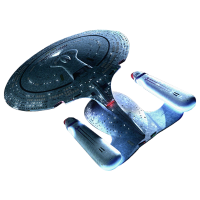
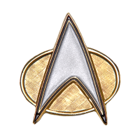

<!DOCTYPE html>
<html>
  <head>
    <meta charset="UTF-8">
    <title>title</title>
  </head>
  <body>

  </body>
</html>

<!DOCTYPE html>
<html>
  <head>
    <meta charset="UTF-8">

    <!-- responsive -->
    <meta content="width=device-width" name="viewport">

    <!-- SEO -->
    <meta content="Star Trek: The Next Generation Fan Page" name="description">
    <meta content="Star Trek, Next Generation, Enterprise" name="keywords">
    <meta content="Anastasia Bennett" name="author">
    <title>Star Trek: The Next Generation | Welcome</title>
    <!-- <link rel="stylesheet" type="text/css" href="./css/style.css"> -->
    <LINK href="style1.css" rel="stylesheet" type="text/css">
  </head>
<body>
	<header>
		
		<!-- container for logo and nav -->
		<div class="container">
			<div id="branding">
				<h1><span class="highlight">Star Trek</span> The Next Generation Fan Page</h1>
			</div>
			<nav>
				<ul>
					<li class='current'>
						<a href="index.html">Home</a>
					</li>
					<li>
						<a href="about.html">About</a>
					</li>
					<li>
						<a href="topmissions.html">Top Missions</a>
					</li>
				</ul>
			</nav>
		</div>
	</header>

	<!-- showcase area -->
	<section id="showcase">
		<div class="container">
			<h1>Star Trek: The Next Generation Fan Page</h1>
		</div>
	</section>

	<!-- newsletter -->
	<section id="newsletter">
		<div class="container">
			<h1>Subscribe to Our Newsletter</h1>
			<form>
				<input placeholder="Enter Email..." type="email"> <button class="button_1" type="submit">Subscribe</button>
			</form>
		</div>
	</section>

	<!-- page options of site -->
	<section id="boxes">
		<div class="container">
			<div class="box">
				<a href="https://en.wikipedia.org/wiki/List_of_Star_Trek:_The_Next_Generation_cast_members"></a>
				<h3>Meet the Crew</h3>
				<p>The Enterprise is commanded by Captain Jean-Luc Picard and is staffed by first officer Commander William Riker, second officer/operations manager Data, security chief Tasha Yar, ship's counselor Deanna Troi, chief medical officer Dr. Beverly Crusher and her son Wesley Crusher, conn officer Lieutenant Geordi La Forge, and junior officer Lieutenant Worf.</p>
			</div>
			<div class="box">
				<a href="https://stage-9.co.uk/gallery/"></a>
				<h3>Explore The Enterprise</h3>
				<p>The Enterprise-D is a Galaxy-class ship and the fifth Federation starship in Starfleet to carry the name Enterprise. Enterprise-D is the flagship of Starfleet.</p>
			</div>
			<div class="box">
				<a href="https://en.wikipedia.org/wiki/Timeline_of_Star_Trek"></a>
				<h3>Star Trek Timeline</h3>
				<p>One of the most interesting aspects of the Star Trek franchise is the "history" associated with its storylines. Here is the abridged timeline of events established in the group of television shows and feature films set in the Star Trek universe. Seeing this chart will help you see how Next Generation contributes to the Star Trek story.</p>
			</div>
		</div>
	</section>
	<footer>
		<p>Star Trek: The Next Generation Fan Page, 2018</p>
	</footer>
</body>
</html>
